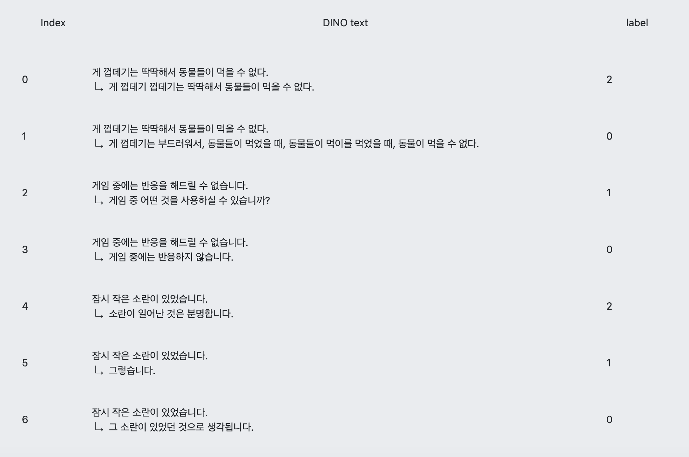

GPT-2 뉴스 댓글 한국어
처음부터 학습한 GPT-2 모델을 이용해 뉴스 댓글을 생성해냅니다.
Fine tuning data :
Kaggle
Notice
Text에 생성될 문장의 base 가 될 글을 입력합니다.
그리고 생성될 문장의 길이인 length 를 선택합니다.
그리고 몇 개의 문장을 생성할지 how many 를 선택합니다.
Example
Input
text: 여러분 힘내
Length: 50
How many: 3
News comment

Try it!
Text:
submit
Result
Script